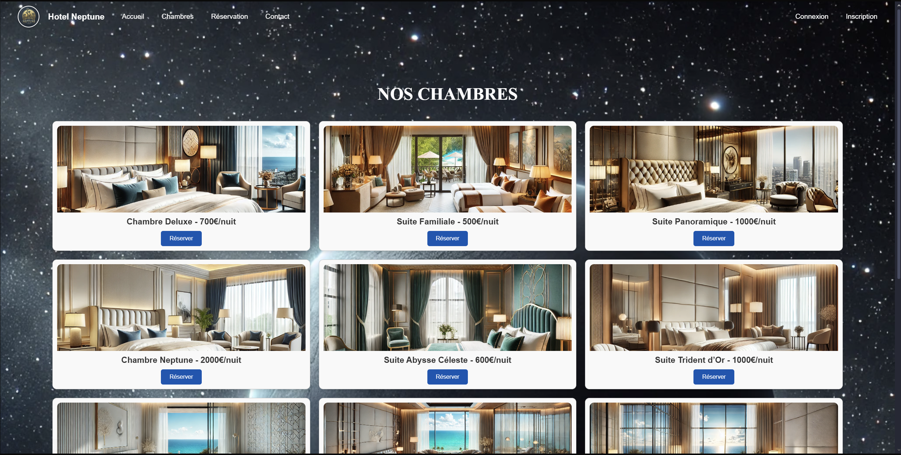
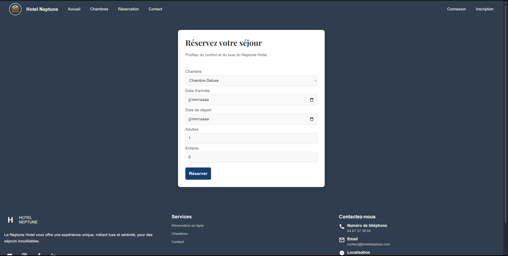

Gestion d'hôtel
Création d'un site d'hôtel fictif, avec la gestion de l'hôtel.
Gestion d'hôtel
Création d'un site d'hôtel fictif, avec la gestion de l'hôtel.
Projet en HTML/CSS, PHP avec base de données MySQL, avec des fonctionnalités de réservation de différentes chambres, possibilité de payer, mais aussi de gestion client et de facturation partie administration.

